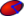

|
| Emplacement du menu |
|---|
| Part Design → Soustraire une primitive → Ellipsoïde soustractif |
| Ateliers |
| PartDesign |
| Raccourci par défaut |
| Aucun |
| Voir aussi |
| PartDesign CompPrimitiveSubtractive |
Description
Insérer un Ellipsoïde primitif soustractif dans le Corps actif. Sa forme est soustraite du solide existant.
Disponible dans la version 0.17
{kind=link}
À gauche, le corps actif (A) en gris et l'ellipsoïde soustractif (B) en rouge transparent ; le résultat final est à droite.
Comment l'utiliser
- Presser le bouton  Ellipsoïde additif. Note : l'Ellipsoïde soustractif fait partie d'un menu d'icônes appelé Soustraire une primitive. Après le démarrage de FreeCAD, le cube soustractif est celui affiché dans la barre d'outils. Pour obtenir l'Ellipsoïde soustractif, cliquez sur la flèche vers le bas à côté de l'icône visible et sélectionnez "Ellipsoïde soustractif" dans le menu.
- Définir les paramètres primitifs et d'attachement.
- Cliquer sur OK.
- Un Ellipsoïde apparaît dans le Corps actif.
{kind=link}
Options
L'Ellipsoïde peut être édité après sa création de deux façons :
- Double-cliquer son étiquette dans l'arborescence, ou faire un clic droit sur l'étiquette et sélectionner Éditer la primitive dans le menu contextuel; ceci ouvre les Propriétés de la primitive.
- Via l'éditeur de propriétés.
Propriétés
- DONNÉESAttachment: définit les modes d'attachement ainsi que le décalage d'attachement. Voir Attachement.
- DONNÉESLabel: Donne le nom de l'Ellipsoïde , changer si nécessaire .
- DONNÉESRadius1: C'est le rayon de l'Ellipsoïde dans le sens Z (hauteur); par défaut parallèle à l'axe Z.
- DONNÉESRadius2: C'est le rayon de l'Ellipsoïde dans le sens X (longueur); par défaut parallèle à l'axe X.
- DONNÉESRadius3: C'est le rayon de l'Ellipsoïde dans le sens Y (largeur); par défaut parallèle à l'axe Y. Si par défaut cette valeur est à zéro, l'ellipsoïde à la forme d'un œuf, sinon la forme est aplatie comme un galet. ellipsoïde de révolution.
- DONNÉESAngle1: (désignée V paramètre dans les paramètres de la primitive) -90° par défaut la coupole est complète en haut, de -0 à -90° coupe le haut de la coupole suivant un cône fictif.
- DONNÉESAngle2: (sans nom) 90° par défaut la coupole est complète en bas, de -0 à -90° coupe le bas de la coupole suivant un cône fictif.
- DONNÉESAngle3: (désignée U paramètre dans les paramètres de la primitive) angle de rotation de l'Ellipsoïde 360° degrés donne une Ellipsoïde complète , de 0 à 360° donne une forme semblable à une part de mandarine.